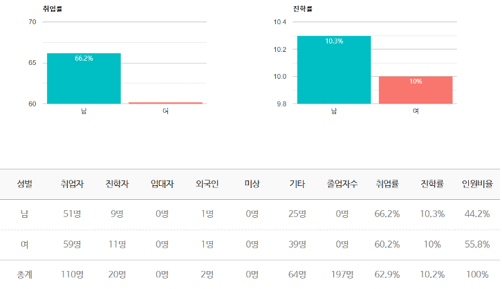
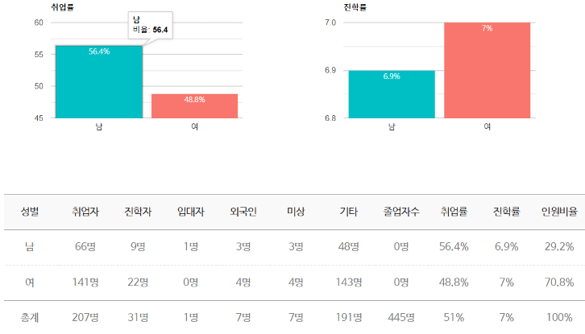

“보시기에 좋았더라”
전공 : 제품디자인 전공, 시각디자인 전공
제품디자인 전공은 4차 산업혁명 시대에 필요한 첨단 제품과 서비스 디자인을 개발하는 방법을 학습하는 과정입니다. 인공지능과 최신 기술을 바탕으로, 인간의 안전과 편의를 위한 혁신적 제품과 서비스를 기획하고 설계합니다. 실생활의 문제를 해결하기 위해 창의적이면서도 과학적인 접근 방식을 통해 디자인 역량을 키우며, 사용자 중심의 설계를 통해 사회에 기여할 수 있는 디자이너를 양성합니다.
드로잉기초 1,2
The Answer
사용자 경험디자인을 체계적이고 논리적으로 분석하고 연구하는 학회입니다.
Magic
다양한 디자인영역에 사용될 수 있는 컴퓨터그래픽 디자인을 소개하고 배우는 학회입니다. 3D Animation, VFX, Digital Drawing 등 최신의 컴퓨터그래픽 소프트웨어와 하드웨어를 사용해서 최고의 디자인 표현기술을 배우며, 정기 전시회와 기업탐방 프로그램 등을 진행 합니다.
DOT(Design Optical Truth)
편집디자인을 기본베이스로 삼은 시각디자인 학회입니다. 도트는 디자인 사조 뿐만 아니라 인문학과 예술 분야에 대한 스터디를 통해 디자인의 역사적, 사회적, 문화적 가치를 공부합니다.
Groovy
모션디자인의 이론과 실무를 연구하고, 다양한 분야에서 활용되는 모션디자인의 최신 트렌 드를 탐구하는 학회입니다. 그루비는 영상 툴을 자유롭게 활용하여, 개성 있는 시각 언어로 2D와 3D 모션디자인의 경계를 넘나드는 디자인을 추구합니다.
GYM
자신의 메세지나 아이디어를 시각적으로 묘사하고 전달하는 방법을 연구하는 시각 커뮤니 케이션 디자인 학회입니다. 그래픽 디자인을 중심으로 3D, 모션, 웹 디자인 등 다양한 분야를 연구하는 것을 통해 시각 커뮤니케이션 디자인의 다양성과 확장성을 탐구합니다.
디자인 캠프
디자인 워크샵
디자인 페어
대기업 및 중견기업
Google, 삼성전자, LG전자, SK, 현대자동차, 삼성SDS, 네이버, 카카오, 엔씨소프트, 라인 등
중소기업
매니페스토디자인랩, 나인피엑스, 샘파트너스, 히든피겨스, DNA, 이니션 등
국내 대학원
한동대학교 대학원, KAIST대학원, 포항공대 대학원, 국민대학교 대학원, 홍익대학교 대학원 등
해외 대학원
Michigan University, New York University, New School of Visual Art 등
시각디자인 전공은 창의적 사고와 표현 능력을 키우는 데 중점을 두며, 이를 통해 세상과 소통하는 디자인 역량을 기릅니다. 시각언어와 문자언어를 바탕으로 다양한 관점에서 세상을 이해하고 표현하는 방법을 배웁니다. 기초 조형, 디자인 소프트웨어, 사진 등 시각적 표현 기술을 익히며, 타이포그래피와 편집디자인을 통해 문자언어의 깊은 이해를 추구합니다.
국내 대학원
한동대학교 대학원, 카이스트 대학원, 홍익대학교 대학원 등
해외 대학원
Rhode Island School of Desing (RISD), School of Visual Arts (SVA), Parsons The New School for Design, School of the Art Institute of Chicago, Pratt Institute, hfG Offenbach(독일), MICA(Maryland Institute College of Art) University of Michigan, California Institute of the Art, California State, University 등
이름 : 이재선
전공 : Pratt Institute 시각디자인 M.A.
연구실 : 느헤미야홀 214호
전화 : 054-260-1460
이메일 : creative1@handong.edu
제품디자인 전공
시각디자인 전공 